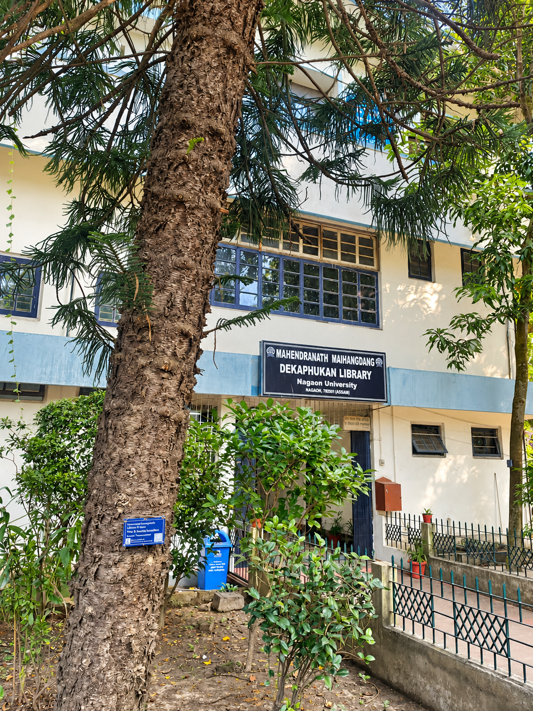
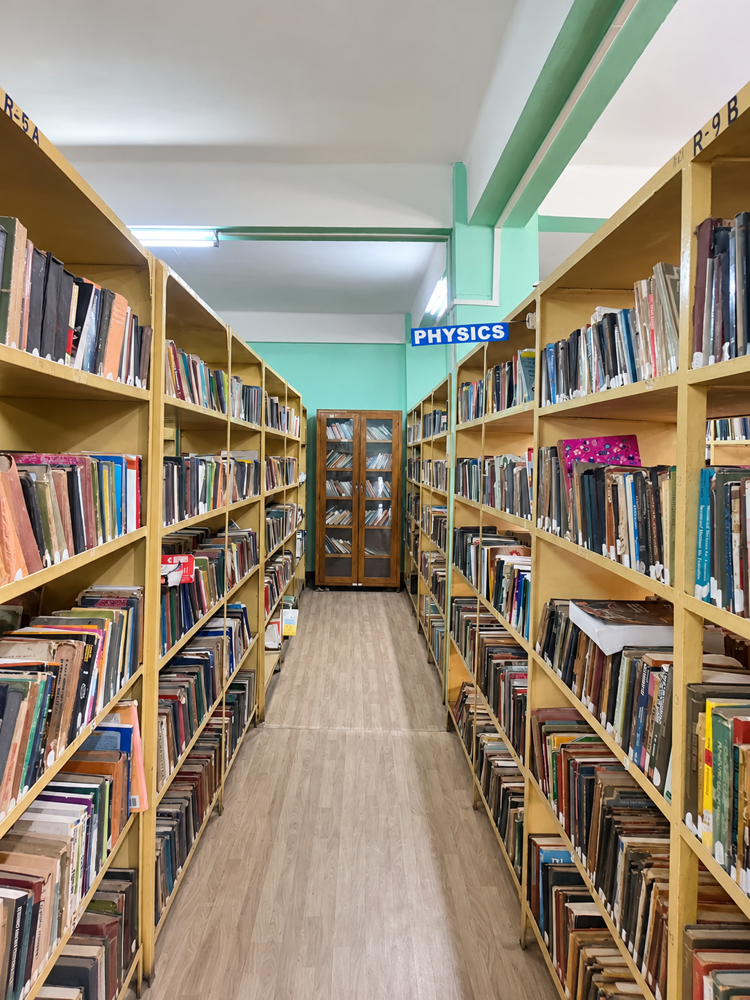
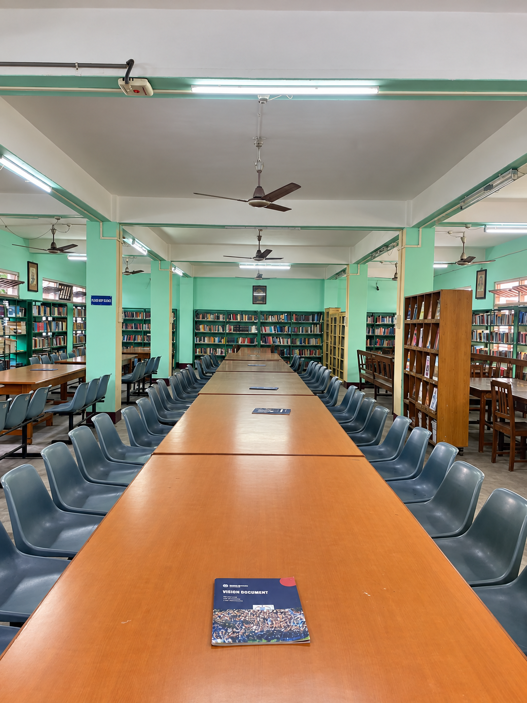
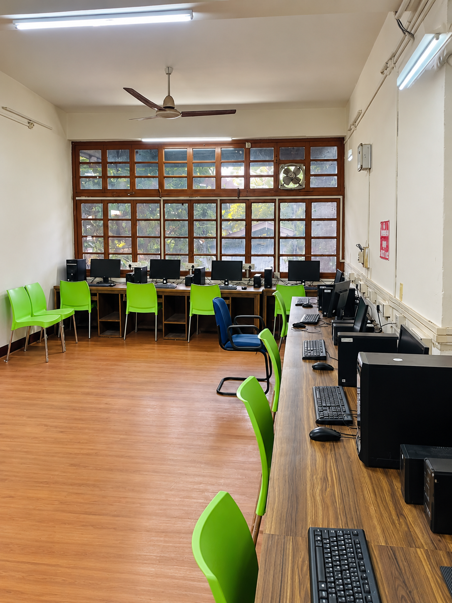
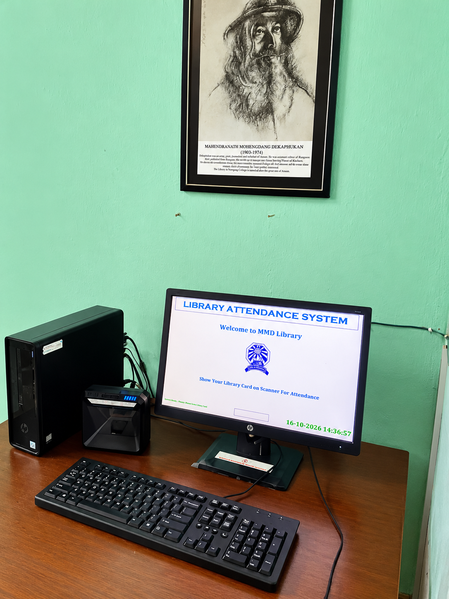

ON
One Nation One Subscription
National access initiative for scholarly journals and publications.
Open ONOS ↗
Explore print collections, study spaces and online scholarly resources at the Mahendranath Maihangdang Dekaphukan Library, Nagaon University.

Collection and facility figures published on the University library page.
Support for coursework, independent learning and academic research across disciplines.
Use the portals below to discover scholarly literature, theses, e-books and open educational content.
Quick access to national and open academic resources.
National access initiative for scholarly journals and publications.
Open ONOS ↗Search learning resources and academic material across subjects.
Open NDLI ↗Information and Library Network Centre and e-resource services.
Open INFLIBNET ↗Indian research theses and dissertations repository.
Search theses ↗Consortia e-resources; eligibility and login may apply.
Open N-LIST ↗Postgraduate e-content developed by subject experts.
Open e-PG Pathshala ↗Online courses from Indian higher education institutions.
Browse courses ↗Discover peer-reviewed open-access journals.
Search journals ↗Explore scholarly works, authors and research topics.
Explore research ↗Search open-access research papers from repositories and journals.
Search CORE ↗Open preprints in physics, mathematics, computer science and more.
Browse arXiv ↗Discover books and materials held by libraries worldwide.
Search WorldCat ↗Access note: Listing a link does not imply that Nagaon University subscribes to that service. ONOS and subscription resources depend on institutional participation and provider access rules.
Spaces for reading, digital access and subject-wise browsing.




Address: Old A.T. Road, Nagaon, Assam – 782001, India
Telephone: 03672-291233 | Email: registrar@nagaonuniversity.ac.in
For library membership, circulation, subscribed-resource access and service timings, please contact the University Library directly.
Visit University Page ↗